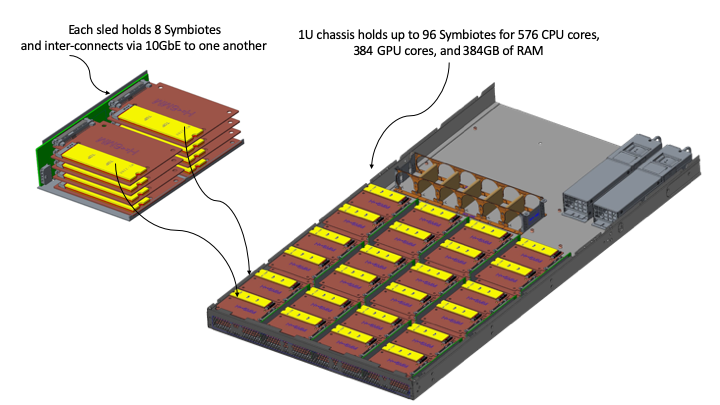

A better class of computational storage
Symbiote was inspired by the run-of-the-mill, industry-standard 2.5" form-factor hard drive (HDD). We thought the packaging and size was great, if only we could marry it with something new. So we came up with Symbiote– an ultra smart drive. What could be more symbiotic than infusing incredible computing power onto a drive? You'd have the best of paradigms. Others have tried to do similar things, but have simply missed the mark by combining such capabilities with the drive's internally accessible micro-controller. Their way of doing things relied on the system's main CPU to offload pre-programmed functions to these additional resources. But the already over-tasked CPU was then forced to carry the additional burden of acting as a centralized arbiter of these computing resources. These earlier forms of smarter drives were also highly proprietary and did not embrace any notion of choices. They were much akin to Henry Ford's early Model T, in which "Any customer can have a car painted any color that he wants so long as it is black." Needless to say, these earlier implementations did not succeed. Fast forward to 2019 and the new crop of SSD companies are doing the same thing.
Symbiote is different. Each drive becomes a stand-alone computational platform and server. There is no notion of a centralized CPU to become a bottleneck, or to act as an arbiter. Each drive is therefore individually addressable over the network, and can act as an object storage device (OSD). This stands in stark contrast with conventional network storage architecture, which is more than two decades old, and which treats the entire multi-drive system as the OSD. This era of new technology requires a substantially new architecture to take advantage of it. And, unlike Mr. Ford's Model T, there are options and choices. You are in control of how much capacity, whether you want to mix and match flash with hard drive technology, and even what type of software you wish to run. Choices! What a novel concept!
The drive IS your new analytics engine
Today's complex analytics require data– and lots of it. And if we are talking about machine learning (ML), artificial intelligence (AI), or just some type of augmented reality (AR), the need for fast storage is substantial. Latency and throughput become much more critical in order to deliver the data to where the analytics are processed. The whole genre of Computational Storage was created to address the needs of these new workloads. But analytics processing (also referred to as neural networks) is very different from offload. While others' solutions incorporate offload capabilities, they cannot implement complex neural networks. This is because they do not possess graphics processing units (GPUs).
Our Symbiotes feature embedded GPUs, and can perform sophisticated neural networking functions locally, right where the data is stored. What this means is you can ingest the data where it will permanently reside, at the lowest CAPEX and OPEX possible, perform your analytics, and then merely send the results to wherever your central indexing resides. This approach is not only cheaper, but is faster, less complex, and also simply smarter. As we continue to usher in 5G and Edge capabilities, we have a responsibility to be ecologically conscious. Processing data at the drive significantly reduces network backhaul.
Convolutional neural networks (CNNs) are the basic building block for machine learning. While it is conceivable that implementing them onto others' smart SSDs is possible, doing so would require FPGAs with far too many gates and far too high cost to be effective or scaleable.
Contrary to the current crop of smart SSDs, Symbiotes are fully capable of running CNNs. The above diagram shows a series of three CNNs that were used to demonstrate 10ms facial recognition as a VNF (virtual network function) deployed at the Edge and as a part of a telecom M-CORD (mobile central office re-architected as a data center) deployment at Mobile World Congress (MWC) 2019 in Barcelona, Spain.
A GPU architecture for the Edge
The use of GPUs has become synonymous with ML/AI. The reason is quite simple. Complex neural processing is computationally intensive. GPUs are capable of massively parallelizing these calculations in a way that general purpose CPUs are not. However, in order for these GPUs to be able to work their magic, the data must be accessible. With Edge Computing, the source for data is also massively parallel, since data comes from millions of subscribers. Funneling data from these sources and getting them into the GPU results in queueing– the opposite of what we want to implement. It is essentially a funnel.
By distributing massive arrays of low-cost GPUs, Edge Computing can better accomodate the types of ML/AI/AR requests that are associated with such a vast distribution of data sources. Unlike with single, large GPUs, these GPU arrays do not create large choke points for data to be processed. And while it is possible to create massive arrays with very powerful GPUs, the costs and power consumption would be counter productive with the economic scale associated with Edge Computing.
A modular, more scaleable architecture to complete a superior technology
Others have completely mis-calculated what it takes to scale from the Edge to the Data Center. This is reflected by their choices for processors to deploy. The de facto choice for deployments is based on an x86-64 architecture, which is fine. The issue is not so much the type of processor architecture, but rather the number of cores and the amount of memory, which impacts costs and power consumption. When we started our original Cachengo concept, we began with comparing architectures for 24-drive storage enclosures. The reason for this was simple. Traditional network storage systems can be represented by 12, 16, 24 and 48 drive configurations. Also, at the time, it was not deemed very feasible to be able to fit 24 server boards AND 24 drives within a 1U chassis, which became our target form-factor for our solutions. What we found was shocking to us. We found our reference design cost 1/10th the cost and 1/15th the power consumption versus another system, using high-volume, standard parts, based on the status quo architecture. That's a huge reduction in CAPEX and OPEX!
2018 was largely spent demonstrating the power of running neural networks on drives, while we also worked out our designs and requirements with customers. The end result is a scalable, building blocks approach to large systems. Rather than base a system architecture on a single large CPU, we can build really large, fast systems with many smaller components. Extracting the capabilities of the many cores within a single CPU is known as coherency. Achieving coherency is often times assumed, but seldom achieved in this era of very large processors. It is much easier to take a smaller processor, completely saturate it and its I/O, and then aggregate many to fill much larger pipes. This is the basis for our design. It also results in the creation of large, scaleable GPU arrays like what is depicted in Figure 5.